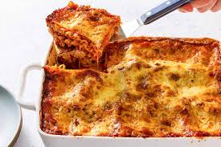

Ingredients
- For the Roasted Vegetables
- 2 tbsp olive oil
- 1 medium yellow onion, chopped
- 3 cloves garlic, minced
- 1 red bell pepper, chopped
- 1 medium zucchini, chopped
- 8 ounces button or cremini mushrooms, sliced or chopped
- 5 ounces button or cremini mushrooms, sliced or chopped
- salt and pepper to taste
- For the Ricotta Filling
- 2 cups (16 ounces) whole-milk ricotta cheese
- 1/2 cup grated parmesan cheese
- 1 large egg, lightly beaten (optional, helps the filling set)
- 1 tbsp chopped fresh parsley or basil (optional)
- salt, pepper, and a pinch of nutmeg to taste
- For Assembly and baking
- 48 ounces (approx. 6 cups) marinara sauce
- 9-12 lasagna noodles(oven-ready/no-boil recommended for ease)
Steps
- Preparation (approx. 20-25 mins)
- Preheat Oven and Prep Veggies:
Preheat your oven to 375°F (190°C). In a large skillet over medium heat, warm the olive oil. Add the onion, bell pepper, mushrooms, and zucchini. Sauté until tender and lightly browned, about 7-10 minutes. Stir in the minced garlic.
- Make the Veggie Marinara:
Add the marinara sauce, Italian seasoning, salt, pepper, and red pepper flakes to the skillet with the sautéed veggies. Bring to a simmer. Turn off the heat and stir in the chopped spinach until it wilts.
- Prepare the Ricotta Mixture:
In a medium bowl, combine the ricotta cheese, Parmesan cheese, beaten egg (if using), fresh herbs, and seasoning. Mix well.
- Prepare Noodles (If Not Using Oven-Ready):
If using regular dried lasagna noodles, cook them in a large pot of salted boiling water until al dente (firm to the bite). Drain and toss with a little olive oil to prevent sticking.
-
Assembly (Approx. 10 mins)
use a 9x13 inch baking dish for layering.
- Layer 1 (Bottom):
Spread about 1 cup of the veggie marinara sauce evenly over the bottom of the dish.
- Layer 2:
Lay 3-4 lasagna noodles over the sauce, breaking them to fit as needed.
- Layer 3:
Spread half of the ricotta mixture over the noodles.
- Layer 4:
Top with a third of the remaining veggie marinara sauce, then sprinkle with a third of the mozzarella.
- Layer 5:
Add another layer of noodles
- Layer 6:
Spread the remaining ricotta mixture over the noodles
- Layer 7:
Top with another third of the remaining sauce and a third of the mozzarella.
- Layer 8 (Top):
Add the final layer of noodles. Spread the remaining sauce over the top, making sure the noodles are completely covered, then sprinkle with the remaining mozzarella and Parmesan cheese.
-
Baking (Approx. 45-50 mins)
- Cover and Bake:
Cover the baking dish tightly with aluminum foil (spray the underside with cooking spray to prevent the cheese from sticking). Place the dish on a rimmed baking sheet to catch any drips. Bake for 35 minutes.
- Cover and Bake:
Cover the baking dish tightly with aluminum foil (spray the underside with cooking spray to prevent the cheese from sticking). Place the dish on a rimmed baking sheet to catch any drips. Bake for 35 minutes.
- Rest and Serve:
Let the lasagna rest for at least 15 minutes before slicing and serving. This is a crucial step that allows the layers to set, preventing a soupy lasagna. Garnish with fresh basil or parsley if desired.